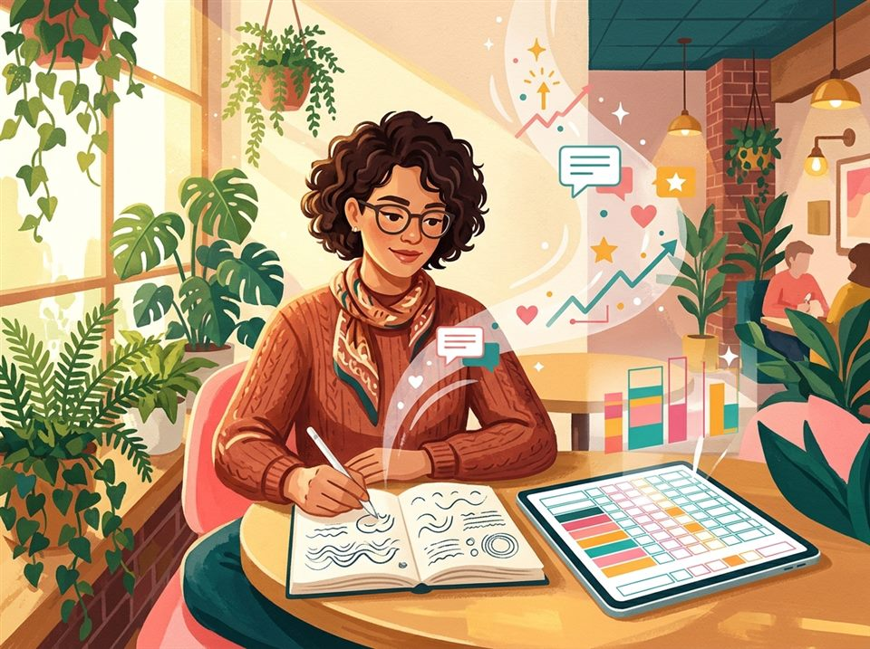

01 · Проблема
С чего всё начинается
Вручную проверять упоминания, новые публикации и активность в социальных источниках неудобно — легко пропустить важный инфоповод или обсуждение.

Вручную проверять упоминания, новые публикации и активность в социальных источниках неудобно — легко пропустить важный инфоповод или обсуждение.
Доработан сценарий мониторинга социальных источников на n8n с обновлением логики обработки данных и подготовкой документации по эксплуатации.
Новые публикации и сигналы собираются регулярно в единый поток, который удобно просматривать и анализировать команде.
Как только в отслеживаемом источнике появляется релевантная публикация, система сохраняет её в структурированном виде для дальнейшей работы.

Утром руководителю и команде приходится вручную просматривать десятки сообщений, отчётов и внешних источников, чтобы понять, что важного произошло за сутки.

Отслеживать изменения на рынке, предложения конкурентов и новые тренды вручную долго — таблицы быстро устаревают, а важные сигналы замечаются слишком поздно.

В рабочую почту одновременно падают заявки клиентов, уточнения, рассылки и уведомления — важные письма тонут в общем потоке, а сотрудники отвечают с задержкой.